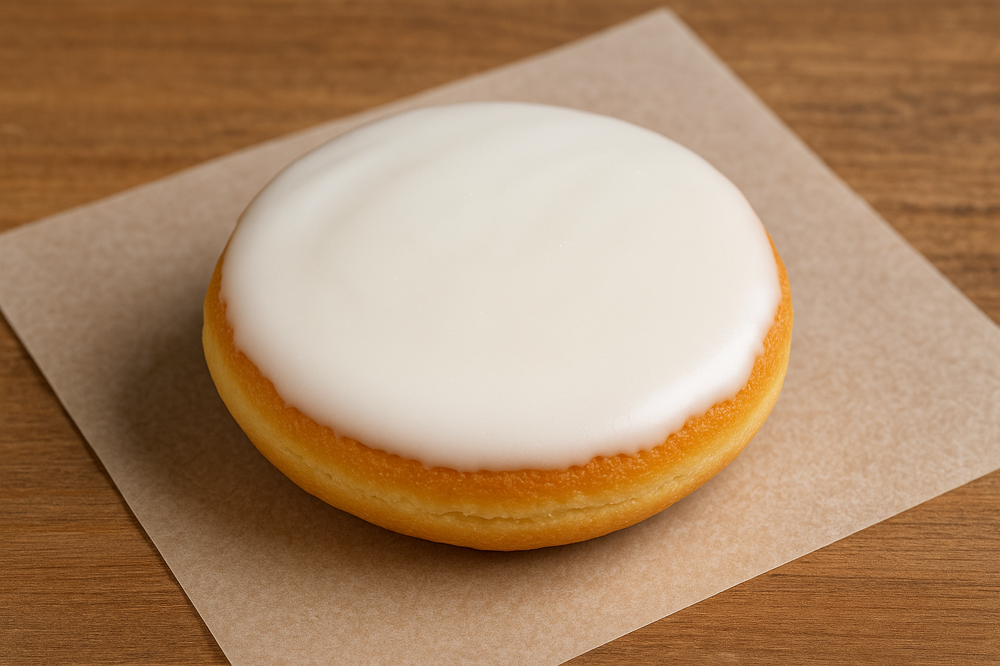

Amerikaner
Zutaten
2 Eier
110g weiche Butter
230g Mehl
100g Zucker
1 EL Vanillezucker oder 1 EL Vanilleextrakt
1 Packung Backpulver
40g Speisestärke
Prise Salz
50ml Milch
Zitronenglasur
400 - 500g Puderzucker
Saft einer Zitrone